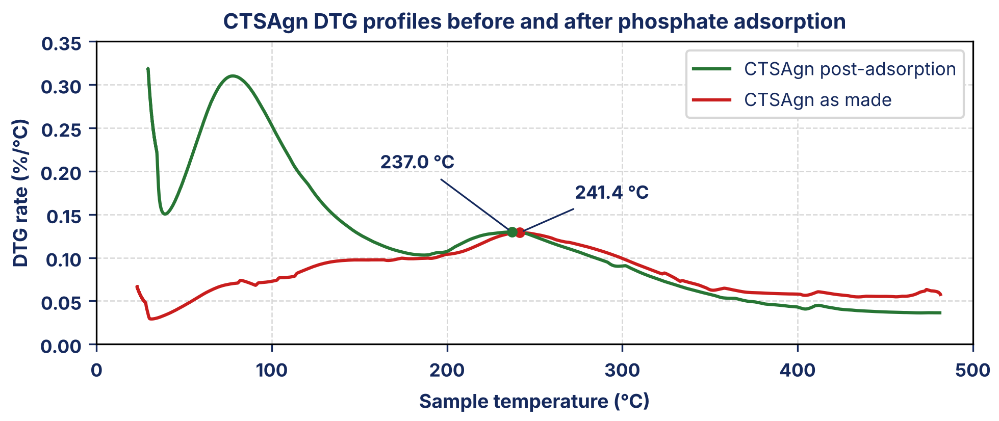

Primary degradation peaks from the September 2018 TGA campaign, read above the water step. Rates are per cent of the 150 °C mass per °C.
| Material | Peak temperature (°C) | Peak DTG rate (%/°C) |
|---|---|---|
| Chitosan precursor | 305.2 | 1.120 |
| Alginate precursor | 246.8 | 1.270 |
| CTSAgn as made | 241.4 | 0.129 |
| CTSAgn post-adsorption | 237.0 | 0.130 |

On the lab’s 150 °C basis the as-made composite’s peak mass-loss rate is 8.7 times lower than chitosan’s and 9.9 times lower than alginate’s; after loading the factors are 8.6 and 9.8. The composite’s peak rate is essentially unchanged by adsorption (0.129 to 0.130 %/°C, +0.6%). On the instrument’s initial-mass column it would appear to fall by 14%, but that is the extra water the loaded sample carries, not a change in how fast the dry material decomposes.
The composite peak at 241.4 °C lies below both precursors, 5.4 °C below alginate and 63.8 °C below chitosan, not between them. Its position and the absence of a chitosan-like event near 305 °C are consistent with an alginate-associated decomposition; the traces alone cannot prove the mechanism.
After loading, the peak moves down 4.4 °C, from 241.4 to 237.0 °C. A lower peak temperature is not by itself evidence of earlier onset. Sorbed phosphate and counter-ions may alter the alginate-rich network, but that is a hypothesis, and with the peak rate unchanged neither observation shows stabilisation or earlier breakdown.
For the recovered material, 5% of the mass held at 150 °C has been lost by about 195 °C under the nitrogen ramp. This is the screening handling/regeneration ceiling, about 42 °C below its peak-rate maximum. It is not a demonstrated safe service limit or a measurement of repeated-cycle capacity retention. Regeneration_Guidance_Bulletin.pdf quotes a higher blanket figure of 220 °C, drawn from other products and never measured on this lot; the 195 °C from this material’s own trace is the better-supported basis.